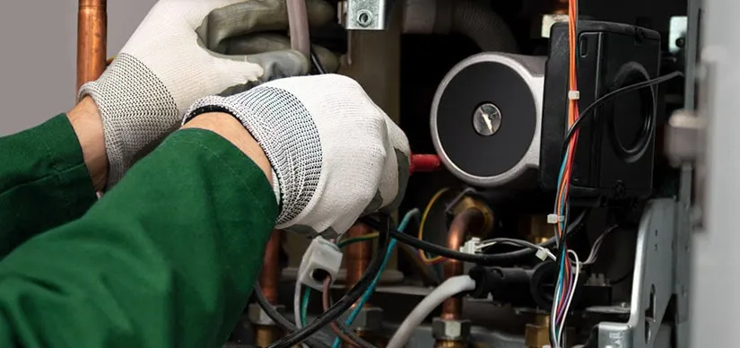

Heating Repair: How To Do It Quickly And Easily

When it comes to heating repair in Orange County, homeowners can trust that they can do it quickly and easily. Whether you have a broken furnace, a malfunctioning thermostat, or any other problem with your heating system, there are steps you can take to fix the issue in no time.
You also have access to some of the best heating repair services in the area.
This post will discuss how to perform heating repair quickly and easily. From determining the cause of the problem to finding the right tools and resources.
If No Sufficient Heating
If you're living in Orange County, CA, and find that your heater is not producing enough heat, it's time to consider some heating repairs. You can perform many of the basic repairs yourself.
To determine whether a fuse has blown, check the fuse box.. If you have an electric furnace, check the power supply cord and outlet. Make sure they are properly plugged in and grounded. Also, check that they are not damaged in any way.
If nothing is detected, try to determine what's causing the problem by looking at your house and its heating system. If you don’t see any obvious problems, then it's time to do some research.
Look up your model of the heater on the manufacturer’s website or search for similar models online so that you know what type of repair tools and resources are needed for your specific unit.
Heater Not Functioning at All
If your heater isn’t working at all, then it could be due to a variety of different issues. The first thing you should do is check the power supply and make sure there are no blown fuses or tripped breakers. If that doesn’t fix the problem, try resetting your thermostat.
To check your circuit breaker, simply locate your fuse box and reset the breaker by flipping the switch to the off position, waiting a few seconds, and then flipping it back to the on position.
If the problem persists, contact a local heating repair service to diagnose and fix the issue.
For Gas Furnaces, Check the Pilot Light
If the pilot light goes out, then your furnace won't be able to ignite and heat your home. Fortunately, it's easy to relight the pilot light yourself in just a few minutes with a few simple steps.
The first step is to find the pilot light. On most furnaces, this is located near the bottom of the unit. You may need to remove a protective covering to locate it. Once you've found the pilot light, use a match or lighter to ignite it.
Next, turn the knob or switch that controls the pilot light. This is typically marked On/Off or Pilot. Turn it to On or Pilot.
Depending on your furnace, you may also need to hold down another button or knob at the same time as turning this switch on.
You should then be able to see the pilot light burning steadily. If it is not steady, try adjusting the size of the flame by turning the knob or screw located next to it. If it still won't stay lit.
Once you've relit the pilot light and it is burning steadily, you should be able to turn the knob back to On or Main, which will allow your furnace to turn on and heat your home.
If your furnace still isn't working properly after relighting the pilot light, you'll need to call an HVAC technician for further heating repair in Orange County.
Clean or Replace the Filter of Your Heater
One of the most crucial things you can do when it comes to heating repair in Orange County, CA is to routinely clean or replace your heater filter.
This is crucial for the efficient operation and durability of your heating system.
If you don't frequently replace or clean the filter, it can fill up with dust, pet hair, and other debris, which will dramatically restrict airflow and put too much strain on your heater.
To ensure that your filter is in good working condition, take a look at it every month and replace or clean it as needed.
To replace your filter, purchase one that’s compatible with your model and follow the instructions on the packaging.
To clean the filter, use a vacuum cleaner on the medium setting, being careful not to damage it in the process. If you have pets, you may need to replace the filter more frequently to keep it from becoming clogged too quickly.
By taking the time to clean or replace the filter of your heater regularly, you can extend its life and maximize its efficiency.
This simple maintenance task can help you save money in the long run, as it can prevent costly repairs or replacements down the road.
Regularly Inspect the Furnace
If you're looking to save time and money on heating repairs in Orange County, checking your furnace regularly is a great place to start. This will help identify any potential problems, as well as how best to go about solving them.
Start by checking the furnace filter and the blower assembly. Make sure they are clean and free of debris.
Additionally, look for signs of wear and tear or corrosion. If any of these issues are present, it may be necessary to call a heating repair technician in Orange County for professional assistance.
Check for Gas Leaks
It is important to check for gas leaks before beginning any repair work. If you don't, you could put yourself and your family at risk of a hazardous situation. To begin, check the gas lines that lead into the furnace.
They should be free of cracks or holes. If you find any, consider having them repaired by a professional.
Next, check the pilot light on your furnace to make sure it's working properly. If it's not lit up at all, then you'll need a new one installed.
Call a Professional
If you're dealing with heating repair in Orange County, it's important to seek help from a professional. Professionals at EZ Heat And Air have the expertise and knowledge to address any problem with your system quickly and efficiently.
They'll be able to diagnose the issue and provide a solution that not only works for your budget but also ensures your comfort and safety. A professional heating repair technician can also provide tips on how to maintain your system so you don't end up dealing with similar problems in the future.
Reach out to a reliable heating repair service in Orange County today to get the help you need!
Conclusion
You have a lot of options for heating repair in Orange County. There is a fix for everyone, whether you need short fixes or something more substantial and long-lasting.
From small repairs that can be done quickly and easily, to larger replacements or overhauls that can take some time and effort, there are professionals out there who are ready and willing to help.
No matter the size of the job, it’s important to get it done right the first time. With the right tools, knowledge, and the right professionals, your heating repair needs can be taken care of with ease.